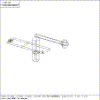

 Figure (robot): The RMIT Robot Arm
The model shown in Figure (robot) will be described in a step by step instructions on how to build and display this model.
This is the MGED input file:
in btm box 0 0 0 0 -90 0 40 0 0 0 0 6 in btm1 box 0 -90 0 0 -61.549 0 40 0 0 0 0 6 in rad rcc 20 -150 0 0 0 6 8 in cyl rcc 20 -45 6 0 0 30 20 in cyl1 rcc 20 -45 0 0 0 36 15.5 in cyl2 rcc 20 -45 0 0 0 36 12.5 in hole rcc 8 -8 0 0 0 6 3 in hole1 rcc 32 -8 0 0 0 6 3 cp hole1 hole2 in gus raw 21.5 -25.3 6 0 0 30 0 25.3 0 -3 0 0 in cnr box 0 0 0 6 6 0 6 0 0 0 0 6 in cnr1 box 34 0 0 0 -6 0 6 0 0 0 0 6 cp cnr cnr2 cp cnr1 cnr3 in rad1 rcc 6 -6 0 0 0 6 6 in rad2 rcc 34 -6 0 0 0 6 6 in head rcc 20 -45 36 0 0 30 18 in shaft rcc 20 -45 36 0 0 -50 12.5 in han rcc 20 -45 51 0 120 0 6 in ball sph 20 75 51 15 in cut box 20 -45 0 0 50 0 25 0 0 0 0 40 in squ box 12 -53 -14 0 16 0 16 0 0 0 0 -30 r handle u squ u shaft u han - ball r knob u ball r cor u cnr2 + rad1 r cor1 u cnr3 + rad2 in hole4 rcc 20 -150 0 0 0 6 3 cp hole2 hole3 r base u btm u btm1 - hole2 - hole3 - hole4 u rad - hole4 g all base handle knob size 300 e all
This is the MGED dialog:
mged mark
BRL Graphics Editor (MGED) Version 2.31
Sat Oct 17 20:33:05 PDT 1987
mg\@godzilla:/usr/staff/mg/brlcad/mged
mark: No such file or directory
Crete new database (y/n)[n]? y
attach (nu|tek|plot|ir) [nu]? nu
ATTACHING nu (Null Display)
Untitled MGED Database (units=mm)
mged> in btm box 0 0 0 0 -90 0 40 0 0 0 0 6
mged> in btm1 box
Enter X, Y, Z of vertex: 0 -90 0
Enter X, Y, Z of vector H: 0 -61.549 0
Enter X, Y, Z of vector W: 50 0 0 40 0 0
Enter X, Y, Z of vector D: 0 0 6
mged> in rad rcc 20 -150 0 0 0 6 8
mged> in cyl rcc
Enter X, Y, Z of vertex: 20 -45 6
Enter X, Y, Z of height (H) vector: 0 0 30
Enter radius: 20
mged> in cyl1 rcc 20 -45 0 0 0 36 15.5
mged> in cyl2 rcc 20 -45 0 0 0 36 12.5
mged> in hole rcc 8 -8 0 0 0 6 3
mged> in hl ole 1 rcc 2 32 -8 0 0 0 6 2 3
mged> cp hole1 hole2
mged> in gus raw
Enter X, Y, Z of vertex: 21.5 -25.3 6
Enter X, Y, Z of vector H: 0 0 30
Enter X, Y, Z of vector W: 0 25.3 6
Enter X, Y, Z of vector D: -3 0 0
mged> in cnr box 0 0 0 06 6 0 6 0 0 0 0 6
mged> incnr1 box 34 0 0 0 -6 0 6 0 0 0 0 6
incnr1: no such command, type ? for help
mged> in cnr1 box 34 0 0 0 -6 0 6 0 0 0 0 6
mged> cp cnf r cnr2
mged> in cp cnr1 cnr3
mged> in rad1 rcc 6 -6 0 0 0 6 6
mged> in rad2 rcc 34 -6 0 0 0 6 6
mged> in shaft rcc 20 -45 36 0 0 30 18
mged> in shaft rcc 20 -45 36 0 0 -50 12.5
mged> in han rcc 20 -45 51 0 120 0 6
mged> in ball sph
Enter X, Y, Z of vertex: 20 75 51
Enter radius: 15
mged> in cut box 20 -45 0 0 50 0 25 0 0 0 040
Enter Z: 03 NOTE: error again
mged> killall cut
mged> in cut box 20 -45 0 0 50 0 25 0 0 0 0 40
mged> in squ box 12 -53 -14 0 16 0 16 0 0 0 0- -30
mged> r handle + squ shaft u han u ball
Defaulting item number to 1001
Creating region id=1000, air=0, los=100, GIFT material=1
mged> r knob + ball
Defaulting item number to 1002
Creating region id=1001, air=0, los=100, GIFT material=1
mged> r cor + cnr2 + rad1
Defaulting item number to 1003
Creating region id=1002, air=0, los=100, GIFT material=1
mged> r cor1 + cnr3 + rad2
Defaulting item number to 1004
Creating region id=1003, air=0, los=100, GIFT material=1
mged> mater knob plastic
Was
Parameter string? n
Override material color (y/n)[n]? y
R G B (0..255)? 255 0 0 NOTE: This is color RED
mged> mater handle plastic
mged> Was
Parameter string? n
Override material color (y/n)[n]? y
R G B (0..255)? 219 147 112 NOTE: This is color TAN
mged> r base + btm u btm1 u gus cyl - cyl1 m1 - hole2 -hole3 -hole4 u rad-
hole4
mged> error in number of args! NOTE: Typing errors
mged> r base + btm u btm1 - hole2 - hole3 - hole4 u rad - hole4
Defaulting item number to 1005
Creating region id=1004, air=0, los=100, GIFTmaterial=1
dir_lookup: could not find "hole3"
skipping hole3
dir_lookup: could not find "hole4"
skipping hole4
dir_lookup: could not find "hole4"
skipping hole4
mged> t
ball cnr3 gus knob/
base/ cor/ han rad
btm cor1/ handle rad1
btm1 cut head rad2
cnr cyl hole shaft
cnr1 cyl1 hole1 squ
cnr2 cyl2 hole2
mged> in hole 4 rcc 20 -150 0 0 0 6 3
mged> cp hole2 hole3
mged> killall base NOTE: Redo "base" region
mged> r base + btm u btm1 - hole2 - hole3 - hole4 u rad - hole4
Defaulting item number to 1006
Creating region id=1005, air=0, los=100, GIFTmaterial=1
mged> g all base handle knob
mged> tree all
| all_________________| base_________| btm
| btm1
| hole2
| hole 3
| hole4
| rad
| hole4
| handle______________| squ
| shaft
| han
| ball
| knob________________| ball
| handle_______________| squ
| shaft
| han
| ball
| knob_________________| ball
mged> l base
base (len 9) REGION id=1005 (air=0, los=100, GIFTmater=1)--
+ btm
u btm1
- hole2
- hole3
- hole4
u rad
- hole4
u handle
u knob
mged> l gus
gus: ARB8 (ARB6)
1 (21.5000, -25.3000, 6.0000)
2 (21.5000, 0.0000, 6.0000)
3 (21.5000, 0.0000, 6.0000)
4 (21.5000, -25.3000, 36.0000)
5 (18.5000, -25.3000, 6.0000)
6 (18.5000, 0.0000, 6.0000)
7 (18.5000, 0.0000, 6.0000)
8 (18.5000, -25.3000, 36.0000)
mged> l ball
ball: ELL
V (20.0000, 75.0000, 51.0000)
A (15.0000, 0.0000, 0.0000) Mag=15.000000
A dir cos=(0.0, 90.0, 90.0), rot=0.0, fb=0.0
B (0.0000, 15.0000, 0.0000) Mag=15.000000
B dir cos=(90.0, 0.0, 90.0) rot=90.0, fb=0.0
C (0.0000, 0.0000, 15.0000) Mag=15.000000
C dir cos=(90.0, 90.0, 0.0) rot=90.0, fb=90.0
mged> l knob
knob (len 1) REGION id=1001 (air=0, los=100, GIFTmater=1)--
Material "plastic"
Color 255 0 0
+ ball
mged> l handle
handle (len 4) REGION id=1000 (air=0, los=100, GIFT MATER=1)--
Material "plastic" "n
Color 219 147 112
+ squ
u shaft
u han
u ball
mged> canter-0-75 0
mged> size 300
mged> tops
all/ cor1/ cyl2 hole1
cnr cut gus
cnr1 cyl head
cor/ cyl1 hole
mged> analyze cyl
cyl: TGC
V (20.0000, -45.0000, 6.0000)
H (0.0000, 0.0000, 30.0000) Mag=30.000000
H dir cos=(90.0, 90.0, 0.0), rot=90.0, fb=90.0
A (-17.5032, -9.6767, 0.0000) Mag=20.000000
B (9.6767,-17.5032, 0.0000) Mag=20.000002
c=20.000000, d=20.000002
AxB dir cos=(90.0, 90.0, 0.0), rot=90.0,fb=90.0
Surface Areas: base(AxB)=1256.6371
top(CxD)=1256.6371 side=3769.9114
Total Surface Area=6283.1855
Volume=37699.1132 (0.0100 gal)
mged> q
{kind=link}